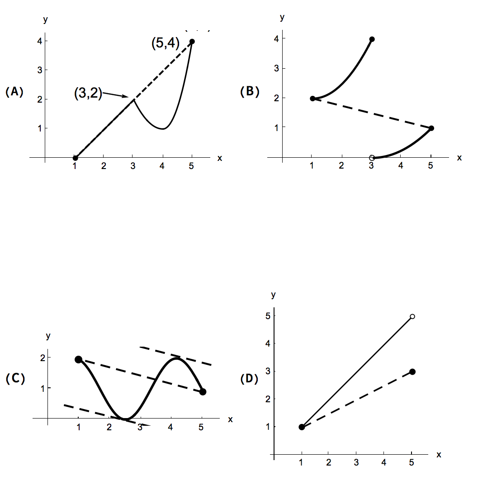

Given the four functions on the interval \([1, 5]\), answer the questions below.
- (a)
- List the functions that satisfy the hypothesis of the Extreme Value Theorem on \([1,5]\).
- (b)
- For each of the functions, determine if they have a global maximum, a global
minimum, both, or neither. The function in figures (A) and (C) satisfy the hypothesis of the Extreme Value Theorem, so they are guaranteed to have both a global maximum and a global minimum. The points where these global extrema are attained can be seen from the graph. (A) has a maximum at \(x=4\) and minimum at \(x=1\). (C) has a maximum at \(x=1\) and \(x=4\), and minimum around \(x=\frac {5}{2}\).
The function in (B) has a maximum at \(x=3\), but no global minimum. The function in (D) has a minimum at \(x=1\), but no global maximum.
- (c)
- List the functions that satisfy the hypothesis of the Mean Value Theorem on \([1, 5]\).
Only the function in figure (C) satisfies the hypothesis of the Mean Value Theorem on \([1,5]\). The function in figure (C) is continuous on \([1,5]\) and differentiable on \((1,5)\).
The function in figure (A) is not differentiable at \(x=3\), therefore it is not differentiable on \((1,5)\).
The functions in figure (B) and (D) are not continuous on \([1,5]\). - (d)
- List the function (or functions) for which there exists a point \(c\) in \((1, 5)\) such that \[ f'(c) = \frac {f(5) - f(1)}{5 - 1} \]Only the graphs (A) and (C). Explanation below. Look at these figures.In figure(A), the secant line connecting the points \((1,f(1))\) and \((5,f(5))\) is also a tangent line to the curve at \(x\), \(1<x<3\).

(A): \(\frac {f(5)-f(1)}{5-1}=\frac {1-5}{4}=-1\) and for any \(c\) in \((1,5), f'(c)=-1\).
(C):\(\frac {f(5)-f(1)}{5-1}\) is the slope of the secant line connecting the points \((1,f(1))\) and \((5,f(5))\). This line is parallel to two tangent lines shown in the figure (C). The lines have the same slope. The slope of either of a tangent line is \(f'(s)\), where is \((s, f(s))\) is the point where the line touches the curve.
(B): The slope of the secant line connecting \((1,f(1))\) and \((5,f(5))\) is negative On the other hand \(f'(s)>0\), for \(1<s<3\) and \(3<s<5\). So, \(\frac {f(5)-f(1)}{5-1}=\frac {1-5}{4}=-\frac {1}{4}\ne f'(s)\), for all \(s\) where \(f'(s)\) defined. (D): The slope of the secant line connecting \((1,f(1))\) and \((5,f(5))\) is given by \(\frac {f(5)-f(1)}{5-1}=\frac {3-1}{4}=\frac {1}{2}\). On the other hand, on the interval \((1,5)\), the graph of the function is a line whose slope is 1. Therefore, \(f'(x)=1\), for \(1<x<5\).